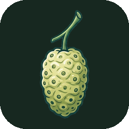

Noni Video Editor
Clatasha’s personal video editor for Windows and Linux.
Source code and build instructions
Based on BananaV.

Clatasha’s personal video editor for Windows and Linux.
Source code and build instructions
Based on BananaV.